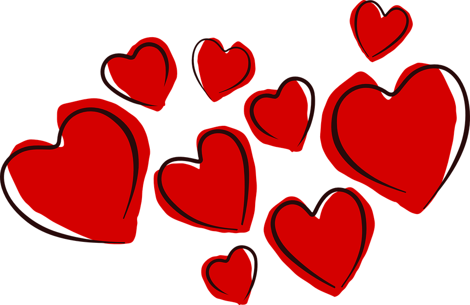
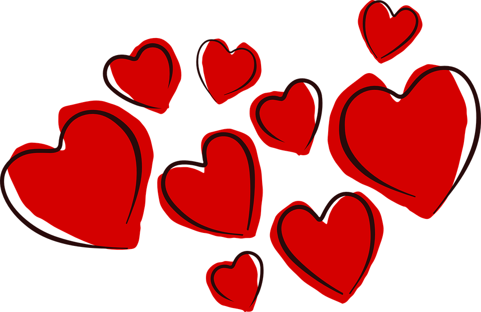

have u lieb
An diesem Tage hat dir dein IT-Nerd etwas kleines gebastelt 🤣
Alles was du hier siehst stammt komplett aus dem Köpfchen deines Kumpels Rick.
Ich hoffe es gefällt dir <3

An diesem Tage hat dir dein IT-Nerd etwas kleines gebastelt 🤣
Alles was du hier siehst stammt komplett aus dem Köpfchen deines Kumpels Rick.
Ich hoffe es gefällt dir <3
Meine Kimi,
von mir bekommst du dieses Mal einen etwas anderen Brief,
knapp 5 Monate ist es nun her, da haben wir uns auf der Insel getroffen und es ist das passiert,
womit ich an diesem Tag am aller wenigsten gerechnet hätte.
Ich habe ein Mädchen kennengelernt mit einer unfassbar atemberaubenden Ausstrahlung,
einem so ansteckendem Lächeln sowie unglaublich gutem Humor.
Dass ich mich dann ausgerechnet auf der Liebesinsel Hals über Kopf in genau dieses Mädchen verliebe,
vervollständigt diesen ganz besonderen Tag auf perfekte Weise.
Mittlerweile haben wir sogar einfach Urlaub zusammen gebucht und ich war mir noch nie mit einer Person so sicher
,dass es klappen und eine unfassbar schöne Zeit wird, wie mit dir!
Danke Kim, dass du immer ehrlich zu mir bist, immer für mich da bist und mir Liebe sowie Aufmerksamkeit schenkst.
Ich habe dich in dieser doch so kurzen Zeit so sehr in mein Herz sowie Leben geschlossen
und merke wie du mich bereicherst, täglich glücklich machst sowie zum lachen bringst.
Bleib für immer ein so positiv einzigartiger und herzlicher Mensch wie du bist
Du bist mein Lieblingsmensch <3
in Liebe,
Rick